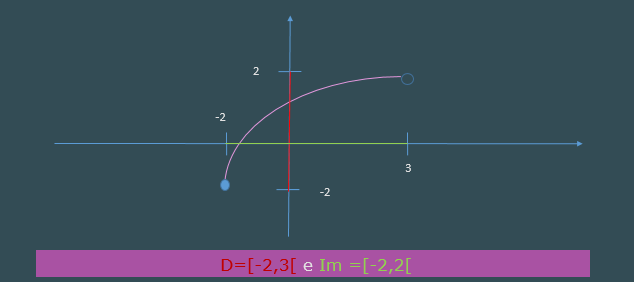
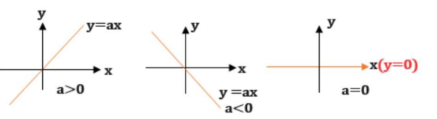
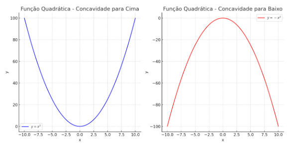
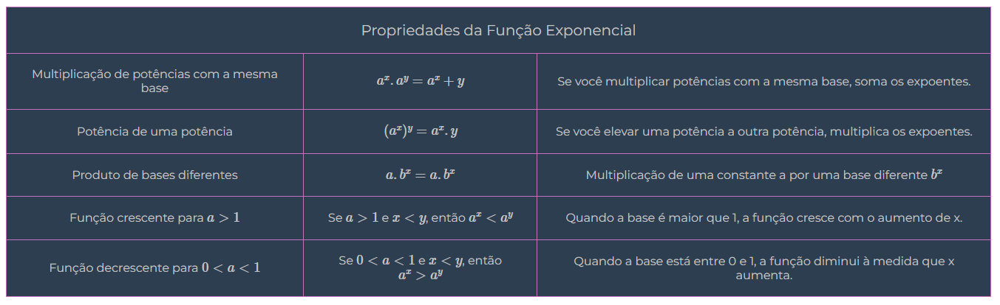

Funções
Definição de Função
Sejam \( A \) e \( B \) dois conjuntos não vazios. Uma função \( f \) de \( A \) para \( B \), representada como \( f:A \to B \), é uma regra que liga cada elemento de \( A \) a exatamente um elemento de \(B\).
Domínio, Contradomínio e Imagem
Exemplo:
- Domínio: \( A = \{1, 2, 3\} \)
- Contradomínio: \( B = \{10, 20, 30, 40\} \)
- Imagem: \( \text{Im}(f) = \{10, 20, 30\} \)
- X ∈ A e Y ∈ B
A função pode ser definida por:
$$ f(x) = 10x $$
Análise Gráfica
Ao analisar um gráfico, podemos encontrar o domínio e a imagem observando os valores de \(x\) e \(y\), que a função atinge. Os pontos com círculo cheio estão incluídos no domínio/imagem, enquanto os pontos com círculo vazio não estão.
Função Constante
A fórmula geral da função constante é \(f(x)=c\), que significa que para cada valor do Domínio o valor da Imagem se manterá o mesmo, ou seja, para cada valor de \(x\) o \(y\) será o mesmo.
Exemplo:
Função Linear
Uma função linear \(f(x)=ax\) tem gráfico em forma de reta que passa por \((0,0)\) e \((1,a)\). Seu comportamento depende de \(a\).
Função Afim
A função afim é representada pela seguinte função: \(f(x)= ax+b\). Assim como a função linear seu comportamento gráfico também depende de \(a\), o qual deve ser diferente de 0. Sendo \(a\) chamado de coeficiente angular e \(b\) de coeficiente linear.
O gráfico a seguir representa a função:
$$ f(x)= 2x + 1 $$
Como montar o gráfico da função afim:
- Identifique os elementos da função:
- Encontre o ponto de interseção com o eixo y:
- Escolha outro valor de x para encontrar um segundo ponto:
2 é o coeficiente angular (inclinação da reta).
1 é o coeficiente linear (interseção com o eixo y).
Substitua x = 0 na função: \(f(0)=2(0)+1=1\)
O ponto é \((0,1)\)
Exemplo: Para x=1, \(f(1)=2(1)+1=3\)
O ponto é \((1,3)\).
Encontrar a função a partir do gráfico
- Identifique a interseção com o eixo y (coeficiente linear):
- Identifique a inclinação da reta (coeficiente angular):
- No gráfico, observe dois pontos quaisquer na reta, como \((0,1)\)e \((1,3)\).
No gráfico, observe onde a reta cruza o eixo y. O valor de y nesse ponto é o valor do coeficiente linear (\(b\)).
No caso de \(f(x)=2x+1\), a reta cruza o eixo y no ponto \((0,1)\), logo \(b=1\).
A fórmula do coeficiente angular é: \[ a = \frac{y - y_{0}}{x - x_{0}} \]
Substituindo os valores na fórmula: \[ a=\frac{3-1}{1-0} \] \[ a=2. \]
Logo, \(a=2\) e \(b=1\), sendo assim, a função que o gráfico representa é: \(f(x)= 2x+1\)
Raíz da Função
É o valor que torna a função zero.
Exemplo: \[ f(x) =\ 2x\ +\ 1 \] \[ 0 =\ 2x\ +\ 1 \] \[ x=-\frac{1}{2} \]
Função Quadrática
Uma função quadrática \(f:R\rightarrow R\) é uma função da forma \(f(x)=ax^2+bx+c\) onde a, b e c são números reais e \(a≠0\). Seu gráfico é representado por uma parábola, se o \(a\) (coeficiente angular) for positivo a concavidade será para cima, caso seja negativo a concavidade será para baixo.
Como montar o gráfico da função quadrática:
- Achar as raízes:
- Achar o vértice:
- Determinar o ponto onde a parábola cruza o eixo y
- 1° Encontrar as raízes:
- 2° Encontrar os vértices:
Igualar a função a zero e resolver a equação de segundo grau. Essas raízes serão a intersecção do gráfico com o eixo X.
\[ x_{v}=\frac{-b}{2a} \] \[ y_{v} =\frac{-\Delta }{4a} \]
Para encontrar o ponto de interseção com o eixo y, basta substituir x=0 na equação.
Exemplo: \( y=x^{2} -4x+3\)
\begin{array}{l} \Delta =b^{2} -4ac\\ \Delta =( -4)^{2} -4.( 1) .( 3)\\ \Delta =16-12\\ \Delta =4 \end{array}
\begin{array}{l} x=\frac{-b\pm \sqrt{\delta }}{2a}\\ \\ x_{1} =\frac{-( -4) +\sqrt{4}}{2.( 1)} =\frac{4+2}{2} =\frac{6}{2} =3\\ \\ x_{2} =\frac{-( -4) -\sqrt{4}}{2.( 1)} =\frac{4-2}{2} =\frac{2}{2} =1 \end{array}
\begin{array}{l} x_{v} =\frac{-b}{2a}\\ \\ x_{v} =\frac{-( -4)}{2.( 1)} =\ \frac{4}{2} =\ 2\\ \\ y_{v} =\frac{-\delta }{4a}\\ \\ y_{v} =\frac{-4}{4.( 1)} =\frac{-4}{4} =-1 \end{array}
Função Exponencial
A função exponencial de base a é uma função que pega um número real x e calcula \(f(x)=a^x\), onde a é um número positivo diferente de 1 (ou seja, \(a>0\) e \(a≠1\)), e x pode ser qualquer número real. A base a é o número que é elevado à potência x.
Como montar o gráfico da função exponencial:
Exemplo: \[ f(x)=2⋅2^x \]
- Identifique os Parâmetros:
\(a=2\) (coeficiente).
\(b=2\) (base da exponencial, como \(b>1\), a função é crescente).
- Calcule Pontos Chave:
Escolha valores para x (por exemplo, -2, -1, 0, 1, 2).
Calcule \(f(x)\) para cada x.
- x = -2
- x = -1
- x = 0
- x = 1
- x = 2
\[f( -2) =\ 2.2^{-2} =2.\left(\frac{1}{4}\right) =0,5\]
\[f( -1) =2.2^{-1} =2.\left(\frac{1}{2}\right) =1\]
\[ f( 0) =2.2^{0} =2.1=2 \]
\[ f( 1) =2.2^{1} =2.2=4 \]
\[ f( 2) =2.2^{2} =2.4=8 \]
Logarítmo de Número Real
Dados dois números reais \(a > 0\), \(a ≠ 1 \) e \(β > 0\), existe um único número \(y\) tal que \(a^y = β\). Esse número \(y\) é chamado de logaritmo de β na base \(a\) e é representado por: \(y = \log_a \beta\) significa que \(a^y=\beta\)
Exemplos:
- \(\log_{a} 1=0\), pois \(a^{0}=1\)
- \(\log_{a} a=1\), pois \(a^{1}=a\)
- \(\log_{\frac{1}{a}} a=-1\), pois \( (a^{-1})^y = a, a^{-y} = a, -y = 1, y = -1\)
- \(\log_{100} 0,1=-\frac{1}{2}\), pois \( (10^{2})^{y} =10^{-1}, y=-\frac{1}{2}\)
- \(\log 100=2\), pois \( (10)^{y} = (10^{2}), y=2\)
- \(\ln =1\), logaritmo natural, pois \(e^1=e\)
Função Logarítmica
A função logarítmica é representada da seguinte forma : \(f(x)= logₐβ\), sendo que base b deve ser positiva e diferente de 1. O Domínio da função logaritmica compreende somente os reais positivos (sem incluir o zero), já sua Imagem abrange todos os reais